Acceso al Sistema
Para acceder al sistema es necesario tener registrado un usuario activo. \n Con el sistema abierto se debe hacer click en el botón superior izquierdo 'Usuario'.
Posteriormente se debe hacer click en Iniciar Sesion.

Vera que aparece una ventana, llamada Login
Deberá ingresar su usuario y contraseña para acceder al sistema.

Listo, se ha iniciado sesion.
Solicitud de Equipos
Utilice esta funcón para solicitar equipo para algun empleado.
En el menu "Gestion de Pedidos", haga click sobre "Solicitar Equipo"

Se desplegará una ventana con el listado de empleados

Luego de haber seleccionado un equipo, haga click en el boton "Solicitar". Aparecera un cartel que indica que la operacion se ha completado.
Solicitud de Retiro de Equipos
Para solicitar el retiro de un equipo, seleccione la opción "Solicitar Retiro de Equipo" del menu "Gestión de pedidos"

Se abrira un formulario con los empleados que tienen un equipo en su domicilio.
Seleccione el empleado e ingrese el motivo del retiro del equipo, posteriormente haga click en "Solicitar"

Como podrá ver, se genera la orden de retiro para ser entregada al personal de Correo Interno.
Imprima dicha orden haciendo click en el boton de impresion del documento.
Asignacion de Equipos
Haga click en el menu Gestión Técnica y luego en la opción "Buscar Componentes"

En el formulario que se abre, seleccione la solicitud a la que le desea agregar el equipo.
Haciendo click en "Buscar Equipo" aparecera un equipo en el espacio en blanco que es el equipo mas adecuado para el prestamo

Al hacer click en "Asignar" se asignara el equipo a la persona y la solicitud ya no aparecera en el listado.
Busqueda de componentes
Al no encontrar un equipo adecuado, puede optar por realizar la busqueda de los componentes adecuados para armar un equipo.
Esta función del sistema genera un remito de retiro de componentes del deposito
Haga click en "Gestion Tecnica" del menu principal y luego en "Buscar Componentes"

En el formulario que se presenta, seleccione una de las solicitudes y luego haga click en "Buscar Componentes"

Se generara un remito que usted podra imprimir, o guardar para luego ir a retirar los componentes a deposito.
Marcar Equipos como Configurados
Para marcar equipos como configurados deben existir equipos con equipos asignados.
Sabiendo esto, sirve para marcar un equipo listo para ser dejado en correo interno, para ello haga click en la opción "Gestión Tecnica" y luego haga click en "Marcar Equipos Configurados".
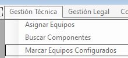Aparecerá el formulario "Marcar Configurado", en el cual podrá seleccionar la solicitud que tiene equipos preparados.
Haga click en alguna de las solicitudes.
Ahora puede generar un remito que puede tener o no tener periféricos agregados.
Al hacer click en "Agregar Perifericos", el sistema buscará en el deposito un monitor, teclado y mouse para poder agregar a la solicitud.
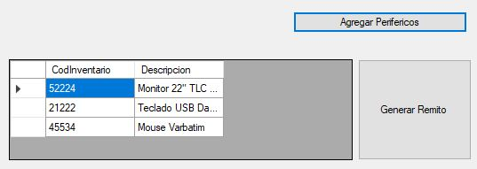Ahora puede generar el remito haciendo click en el boton "Generar Remito"
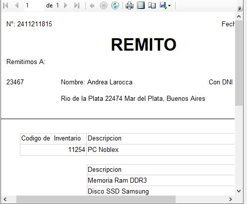Con los controles del cuardo donde aparece el remito, podrá imprimir o guardar el documento para ser usado mas tarde.
Emitir Comodato
Puede emitir el comodato legal del equipo si usted tiene permisos de Legales, para ello haga click en el botón "Gestión Legal" y luego haga click en "Emitir Comodato"
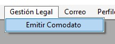Se abrirá un formulario como el siguiente:

En el formulario aparecen las solicitudes que ya estan configuradas y listas para ser enviadas mediavez tengan el comodato legal, que representa el ok de Legales para enviar el equipo.
Al hacer click en "Autorizar Prestamo", se genera el comodato legal, que usted podrá imprimir para que sea firmado por el empleado al recibir el equipo.
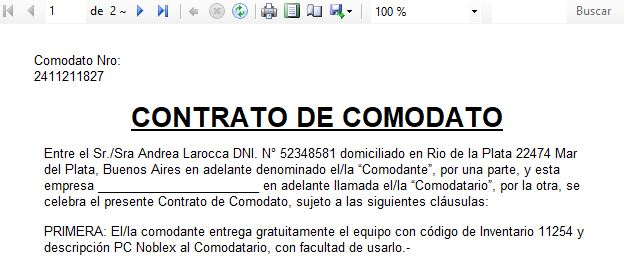Equipos Entregados
Esta funcionalidad sirve para ver los equipos que están listos para entregar y marcarlos como entregados cuando ya han sido entregados al empleado
Para ello vaya a la opción "Correo" dentro del menu inicial y luego en la opcion "Equipos Entregados":
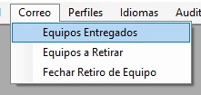Ahora, en la ventana que se abre, va a observar los equipos para entregar y entregados.
Puede seleccionar una de las solicitudes y luego hacer click en el botón "Marcar como Entregada"
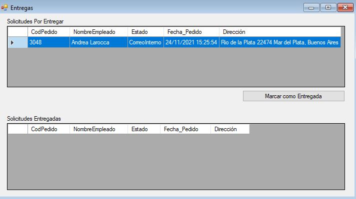Ahora ya la solicitud ha sido marcada en el sistema como entregada.
Equipos a Retirar
En esta parte, usted podrá ver los equipos que están listos para ser retirados del domicilio del empleado y marcarlos como retirados cuando ya se hizo el movimiento. Para ello usted debe tener permisos de Correo dentro del sistema.
Para acceder haga click en el boton "Correo" del menu principal y luego haga click en "Equipos a Retirar"

En la ventana que aparece, puede seleccionar un Equipo a retirar y luego hacer click en "Marcar como Retirado"
Entonces el equpo aparece como Retirado.
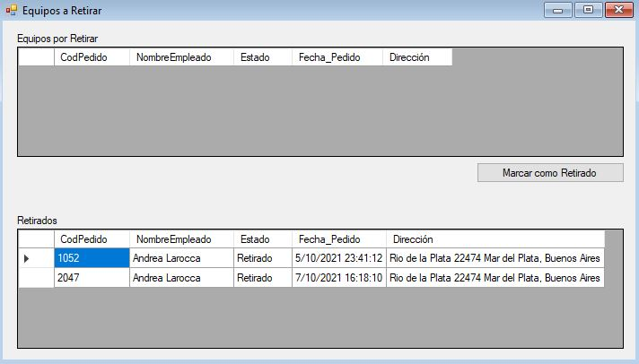Asignar Fecha de Retiro de Equipo
Con esta funcionalidad usted podrá como usuario de Correo Interno, agendar una fecha para ir a retirar el equipo del domicilio del empleado, para ello digígase a la opción "Fechar Retiro de Equipo" que se encuentra dentro del menú "Correo".
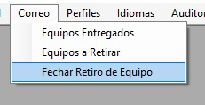Es posible que antes de iniciar el formulario respectivo, aparezca un aviso como este:

Esto sucede por que existen devoluciones con fecha anterior a la actual, entonces el sitema elabora avisos dirigidos a usted para avisarle que ya se vencio la fecha de ir a retirar un equipo.
Para ver los avisos haga click en "Si", de lo contrario haga click en "No" y podrá ver los avisos la próxima vez que quiera fechar las devoluciones.
En caso de que quiera ver los avisos, saldrá la siguiente ventana en la cual podrá hacer click en "Limpiar Avisos" para vaciar la lista de avisos.
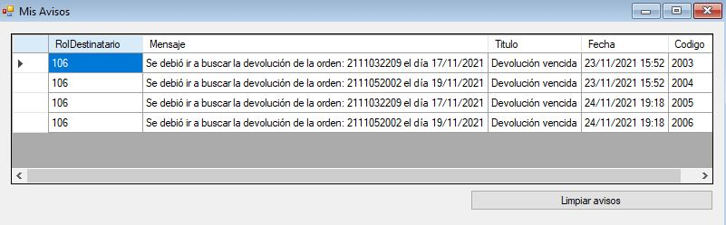Para fechar un retiro, en el formulario "Fechar Devoluciones" podrá elegir la devolución que desea fechar, luego elige la fecha y haga click en "Aplicar".
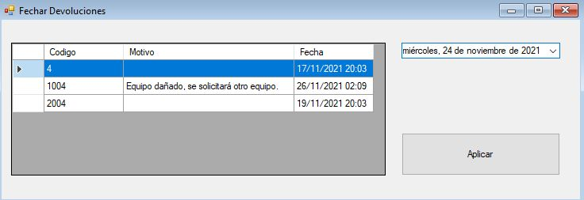Controlar Devoluciones
Esta parte es para controlar las devoluciones recibidas en deposito informático, al recibir el equipo por parte de correo, usted debe recibir también la orden de retiro, esta es necesaria para conocer el numero de orden a ingresar en el sistema y los codigos de inventario de los elementos recibidos.
Puede hacer click en la Opcion "Controlar Devolucion" del menú "Deposito Informatico".
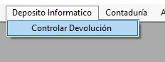Se abrirá un formulario donde tendrá que ingresar el numero de orden de la devolución que aparece en el documento recibido.
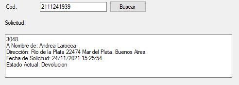Verá que se cargan los datos de la solicitud inicial de la persona, ahora tendrá que ingresar los elementos recibidos, para ello ingrese el codigo de inventario del primer elemento en la casilla de texto que dice C.I. y luego seleccione el estado en el que está recibiendo el elemento.
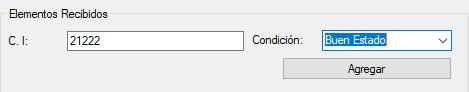Observe que se van agregando los elementos en el listado de abajo. Siga asi con los demás elementos recibidos
Al finalizar, haga click en el boton "Hacer Control"
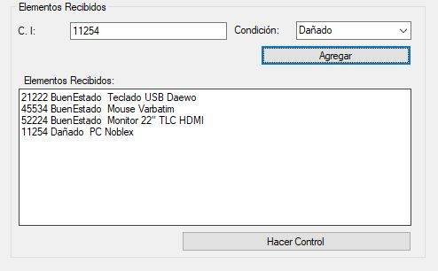El sistema le notificará si están los elementos completos, en el caso de no estarlo, se generará un aviso para correo interno solicitando que se acuda al domicilo del empleado a retirar lo faltante.
Luego el sistema le indicará si el estado de alguno de los equipos difiere del estado en el que fueron entregados, de ser así, se generará un aviso para Contaduría, indicando que se debe reclamar el seguro del elemento.
Ver Avisos
Se necesita tener accesos de Contaduría para poder ver los avisos.
Para ver los avisos haga click en la opcion "Ver Avisos" del menú "Contaduría"
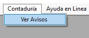La ventana que se abre contiene los avisos, para eliminarlos simplemente haga click en "Limpiar Avisos"
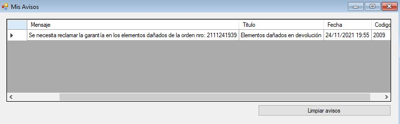Listo, los avisos han sido limpiados.
Cambiar Idioma
Esta funcionalidad permite cambiar el idioma del sistema, para ello digirase a la opción "Cambiar Idioma", del menú "Idiomas"
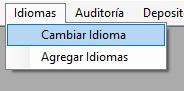Se abrirá una ventana con los idiomas disponibles, seleccione el idioma deseado de los disponibles en el sistema y luego haga click en "Aplicar".
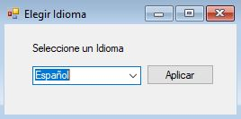Listo, verá como la interfaz cambia al idioma seleccionado.